электронный
ресурс по учебной дисциплине 1-58 01 01 - "ИНЖЕНЕРНО-ПСИХОЛОГИЧЕСКОЕ ОБЕСПЕЧЕНИЕ ИНФОРМАЦИОННЫХ ТЕХНОЛОГИЙ"
|
||
| Оглавление | Программа | Теория | Практика| Контроль знаний | Об авторах | ||
|
Содержание
ТЕМА 7 ФОТОЛИТОГРАФИЧЕСКИЕ ТЕХНОЛОГИИ § 7.1 Технология проведения процесса фотолитографии § 7.2 Технологическое оборудование литографии § 7.1 Технология проведения процесса фотолитографии Шаблоны. На первой стадии изготовления шаблонов для производства ИС вычерчивают сложную конфигурацию шаблонов с высокой степенью интеграции обычно в увеличенном в 100-2000 раз размере. Сложная топология затем переводится в увеличенный оригинал с топологическим рисунком каждого уровня шаблона. 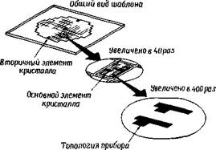 Рисунок 7.1 – Изображение стеклянного фотошаблона ИС Оригинал фотографическим методом уменьшается до размера, в десять раз превышающего размер стеклянной заготовки. Окончательный шаблон изготавливают из десятикратно увеличенной заготовки с использованием системы фоторедуцирования, которая уменьшает изображение до масштаба 1:1. С помощью этой системы происходит экспонирование элементов на последнем фоточувствительном стеклянном шаблоне, механическое удаление соседних полос с неоднократным повторением операций. Каждый элемент содержит полную топологию схемы, соответствующую уровню шаблона. Как все идентичные чипы ИС, или кристаллы, расположены на фотошаблоне, так они будут воспроизведены и на кремниевой пластине. На рис. 7.1 показан шаблон, на который нанесена топология ИС. Шаблон содержит несколько вторичных элементов кристалла, с помощью которых будут изготовлены тестовые модули для контроля процесса производства ИС или для испытаний вариантов конструкции основной схемы. Подход к изготовлению фотошаблона с помощью увеличенного оригинала относительно прост, но не практичен при создании СБИС. Значительные усилия были направлены на разработку интерактивных графических систем, с помощью которых можно электрически описать топологию схемы. Это так называемые системы машинного проектирования. Геометрическая топология воспроизводится на экране электронно-лучевой трубки и видоизменяется с помощью светового карандаша для формирования желаемых размеров элементов схемы. Система машинного проектирования выдает выходные результаты в виде цифровых данных, записанных на магнитной ленте. Последняя используется для управления генератором изображений, формирующим топологический рисунок в масштабе 1:1 или 10:1. Шаблоны изготавливают из стеклянных, покрытых эмульсией пластин (например, пластин с высоким разрешением фирмы Кодак) или стеклянных пластин с твердым поверхностным покрытием. Эмульсионные шаблоны дешевы, но обычно используются для переноса изображения элементов размером не менее 5 мкм. Все шаблоны, сформированные электронным лучом, имеют покрытия из твердых материалов, таких, как хром, окись хрома, окись железа или кремний. Эти шаблоны дороже эмульсионных, но обладают разрешением 1 мкм. Процесс переноса изображения. Целью литографического процесса является перенос деталей рисунка шаблона на поверхность кремниевой пластины (рис. 7.2). На рис. 7.3 показана последовательность обычного процесса переноса изображения. Прежде всего кремниевую пластину окисляют с образованием слоя Si02 на ее поверхности. Толщина этого слоя находится в диапазоне 100-1000 нм. Далее наносят слой резиста в виде однородной пленки толщиной 1 мкм. После сушки резист экспонируют ультрафиолетовым (УФ) облучением через фотошаблон и проявляют в растворителе, при этом неэкспонированный материал резиста растворяется. Затем пластину помещают в раствор, который стравливает вскрытые области Si02 и не оказывает влияния на резист. В качестве травителя Si02 обычно используют разбавленную плавиковую кислоту. На заключительной стадии удаляют резист с получением изображения на окисле Si02, который в последующих операциях используется как маска. Например, в процессе ионной имплантации происходит легирование областей кремния, не покрытых слоем окисла. После удаления Si02 топология легирования кремниевой поверхности повторяет рисунок шаблона. Полную схему получают последовательным совмещением следующих фотошаблонов с топологией на поверхности кремниевой пластины и повторением операций литографического переноса. Для создания функциональной схемы прибора по технологии СБИС выполняют от 5 до 11 стадий литографического переноса изображения.
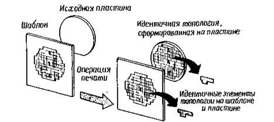 Рисунок 7.2 – Перенос топологии ИС с шаблона на кремниевую пластину
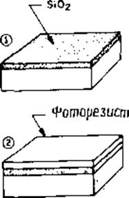
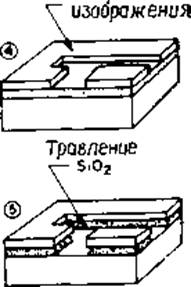
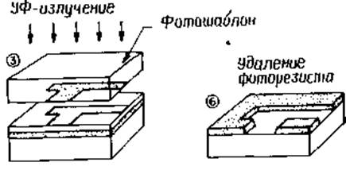 Рисунок 7.3 – Процесс литографического переноса изображения Полный литографический процесс не должен приводить к появлению дефектных изделий. Если 10% кристаллов будут дефектными в каждом процессе переноса (т. е. выход годных кристаллов составит 90%), то после 11 литографических операций окажется годным только 31 % кристаллов. Так как дефекты могут вводиться на всех других стадиях технологии, то выход годных кристаллов может упасть до нуля, если не будет уделено соответствующего внимания проблеме ограничения дефектов. На рис. 7.4 показаны этапы фотолитографического процесса и направления перемещения кремниевых пластин в пределах и за пределами технологической зоны операции литографии. Помещение для работы с фоторезистом обычно освещено желтым светом, так как фоторезист не чувствителен к излучению с длиной волны >500 нм. На первом этапе наносят фоторезист. Эту операцию обычно выполняют методом центрифугирования. Пластина закрепляется в центрифуге на вакуумном держателе, и несколько капель жидкого резиста распределяются на ее поверхности. Затем пластина вращается с постоянной скоростьюв течение 30 с. Толщина получаемой пленки фоторезиста пропорциональна доле твердого наполнителя в резисте и обратно пропорциональна квадратному корню скорости вращения. После вращения пластина подвергается предэкспозиционной сушке для удаления растворителя из резиста и увеличения адгезии резиста к поверхности пластины. Далее пластина и соответствующий шаблон подвергаются воздействию ультрафиолетового облучения. Перед экспонированием фотошаблон должен быть совмещен с уже сформированной на пластине топологией. Затем проводят проявление изображения, отмывку пластины от проявителя и сушку. Термообработка после проявления улучшает адгезионные свойства пленки фоторезиста со сформированным в ней изображением, необходимые для противостояния воздействию травителей на последующих операциях травления . После этого проверяется качество пластин и контролируются размеры топологического рисунка на резисте. Если качество невысокое или размеры элементов топологии не укладываются в установленные допуски, то резист может быть удален, и процесс фотолитографии повторяется. Годные пластины поступают на операции травления, удаления резиста, очистки и последующие стадии изготовления ИС. Полный процесс фотолитографии может занимать несколько часов. Возможна автоматизация этого процесса. Резисты. Резисты могут быть как негативными, так и позитивными. После воздействия экспонирующего облучения растворимость негативных резистов в проявителе уменьшается (рис. 7.3), а позитивных увеличивается. На рис. 7.5, а показаны характеристики экспонирования типичных негативных и позитивных резистов. При малой величине энергии экспонирующего облучения негативный резист обладает полной растворимостью в проявителе. По мере увеличения энергии экспонирующего облучения выше порогового значения Ет большая часть пленки резиста остается нестравленной после проявления. При величинах энергии, в 2- 3 раза превышающих пороговое значение, растворяется очень незначительная часть пленки резиста. Растворимость позитивного резиста в проявителе имеется даже при нулевом значении энергии экспонирующего облучения.
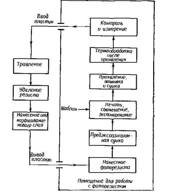 Рисунок 7.4 – Схематическое изображение этапов литографического процесса, используемого для производства ИС При увеличении энергии она значительно возрастает до тех пор, пока при некотором пороговом значении энергии не наступит полная растворимость резиста. Характер кривых, подобных приведенным на рис. 7.5, а, зависит от всех параметров технологических операций нанесения, экспонирования и проявления резиста, а именно: исходной толщины пленки резиста, спектральной характеристики экспонирующего облучения, условий процесса сушки, состава проявителя, времени проявления и т. п. Следовательно, эти кривые могут характеризовать весь процесс обработки фоторезиста. Как показано на рис. 7.5, а, при экспонировании позитивных резистов необходимо облучение с большей энергией (большее время экспонирования), чем для негативных резистов. Следовательно, эффективность экспонирования позитивных резистов меньше по сравнению с эффективностью экспонирования негативных резистов.
Рисунок 7.5 – а – характеристики экспонирования позитивного и негативного резистов, б – изображение резиста после проявления На рис. 7.5,6 показано поперечное сечение пленки резиста со сформированным в ней изображением, иллюстрирующее взаимосвязь между изображением на фотошаблоне и пленке фоторезиста после проявления. Излишнее время проявления приводит к уменьшению размеров элементов изображения на резисте по сравнению с размерами на фотошаблоне для обоих типов фоторезиста. Размеры области, свободной от резиста, и соответственно области, которая будет вытравлена в кремниевой пластине, уменьшаются с увеличением времени экспонирования негативного резиста и увеличиваются при использовании позитивного резиста. Этот эффект в оптической литографии объясняется проникновением экспонирующего облучения под непрозрачные области шаблона, вызванным явлением дифракции света. Целью литографического процесса является точное копирование размеров рисунка шаблона в изображении на пленке резиста и последующий перенос этого изображения на кремниевую пластину. Одна из основных проблем технологии литографического процесса — соблюдение жестких допусков на размеры элементов изображения, необходимых для СБИС, которые обычно не превышают 10% номинального значения ширины линий (например, 0,2 мкм для линий шириной 2 мкм). § 7.2 Технологическое оборудование литографии Оптическая литография. Методы оптической литографии. Основными методами оптического экспонирования являются контактный, бесконтактный (с зазором) и проекционный (рис. 7.6).
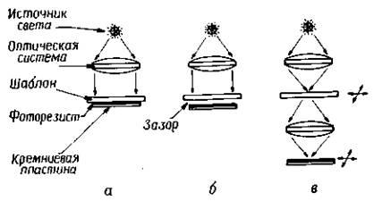 Рисунок 7.6 – Методы оптический литографии: а – контактный; б – бесконтактный; в – проекционный При контактной печати (рис. 7.6, а) пластина кремния, покрытая резистом, находится в непосредственном физическом контакте со стеклянным фотошаблоном. Пластина установлена на вакуумном держателе, который поднимает ее до тех пор, пока пластина и шаблон не придут в соприкосновение друг с другом; прикладываемое усилие составляет несколько килограммов. Для того чтобы провести совмещение топологического рисунка фотошаблона с предыдущим, вытравленным в кремнии топологическим рисунком, шаблон и пластину разводят на ~25 мкм, а пару объективов с сильным увеличением помещают сзади шаблона для одновременного наблюдения топологических рисунков шаблона и пластины с двух точек. Объективы принадлежат микроскопу с разведенным полем зрения, так что правый глаз видит точку на правой стороне шаблона и пластины, а левый – точку слева. Шаблон и пластину совмещают механическим перемещением и вращением вакуумного держателя до совпадения топологических рисунков шаблона и пластины. В этом положении пластина приводится в соприкосновение с шаблоном и проводится еще одна проверка на точность совмещения. При экспонировании микроскоп автоматически отводится, и коллимированный луч ультрафиолетового (УФ) облучения освещает весь шаблон в течение определенного времени экспонирования. Интенсивность экспонирования на поверхности пластины, умноженная на время экспонирования, дает энергию экспонирования или дозу облучения, получаемую резистом. Вследствие тесного контакта между резистом и шаблоном при контактной печати достигаются очень высокие значения разрешения. В пленке позитивного резиста толщиной 0,5 мкм достаточно легко можно воспроизвести элементы схемы размером 1 мкм. Проблемы, возникающие при контактной печати, связаны с наличием загрязнений на поверхности кремниевой пластины. Кремниевая пылинка на пластине может привести к повреждению поверхности шаблона в момент его соприкосновения с пластиной. Поврежденный участок шаблона затем воспроизводится как дефектный топологический рисунок на всех других пластинах, при экспонировании которых использован этот шаблон. Каждая пластина добавляет свои собственные повреждения поверхности шаблона. Если при изготовлении ИС не обеспечивается необходимая чистота процесса и окружающей среды, то лишь несколько кристаллов ИС не будут иметь дефектов. Для обеспечения высокого выхода годных кристаллов СБИС плотность дефектов (число дефектов на 1 см2) должна быть меньше 1 для каждого процесса литографического переноса. Метод бесконтактного экспонирования схож с методом контактной печати, за исключением того, что во время экспонирования между пластиной и шаблоном поддерживается небольшой зазор (ширина 10—25 мкм). Этот зазор уменьшает (но не устраняет) возможность повреждения поверхности шаблона. При отсутствии физического контакта между шаблоном и пластиной перенос изображения осуществляется в дифракционной области Френеля, разрешение в которой пропорционально (λg)1/2, где λ — длина волны экспонирующего излучения, g — ширина зазора между шаблоном и пластиной. При бесконтактной печати величина разрешения составляет 2—4 мкм. Третий метод экспонирования — проекционная печать — позволяет полностью исключить повреждения поверхности шаблона. Изображение топологического рисунка шаблона проецируется на покрытую резистом пластину, которая расположена на расстоянии нескольких сантиметров от шаблона. Для достижения высокого разрешения отображается только небольшая часть рисунка шаблона. Эта небольшая отображаемая область сканируется или перемещается по поверхности пластины. В сканирующих проекционных устройствах печати шаблон и пластина синхронно перемещаются. С помощью этого метода достигается разрешение порядка 1,5 мкм ширины линий и расстояния между ними. Проекционные устройства печати, в которых изображение на шаблоне перемещается над поверхностью пластины, называют системами с непосредственным перемещением по пластине или фотоштампами. При использовании этих устройств- печати шаблон содержит топологию одного кристалла большого размера или нескольких кристаллов малых размеров, которые увеличены до десяти раз. Изображение этой топологии или структуры уменьшается и проецируется на поверхность пластины. После экспонирования одного элемента кристалла пластина сдвигается или перемещается на столике с интерферометрическим управлением по осям XY к следующему элементу одного кристалла, и процесс повторяется. С помощью уменьшающих проекционных фотоштампов можно получить разрешение ~ 1 мкм. В большинстве современных проекционных систем печати оптические элементы являются настолько совершенными, что их характеристики точности отображения ограничены дифракционными эффектами, а не аберрацией линз. Эти устройства печати называют системами с дифракционным ограничением. Разрешение проекционных устройств печати с дифракционным ограничением может быть приближенно оценено величиной 0,5 (λ / NA), где NA — числовая апертура проекционной оптики, а λ — длина волны экспонирующего излучения. Проекционные устройства печати имеют ограниченное фокусное расстояние, превышение которого приводит к ухудшению качества изображения. Фокусное расстояние равно ~±λ/2(NA)2. Высокое разрешение (большая величина числовой апертуры) достигается при уменьшении фокусного расстояния. Например, проекционная система с NA = 0,17 и длиной волны экспонирующего облучения 400 нм будет иметь предельное значение разрешения ~ 1,2 мкм и фокусное расстояние ~±7 мкм. Оптические резисты. В качестве негативного резиста при оптической литографии применяют циклополизопреновый полимер, смешанный с фоточувствительным соединением. Сенсибилизатор, или фотоинициатор, активируется при поглощении энергии в диапазоне длин волн 200-450 нм. Активированный сенсибилизатор передает энергию молекулам полимера, что способствует образованию поперечных связей между цепочками полимера. Увеличение молекулярного веса полимера приводит к нерастворимости резиста в проявителе. Многочисленные реакции, снижающие растворимость резиста, происходят при каждом поглощении сенсибилизатором фотона. Кислород препятствует протеканию реакций полимеризации, поэтому экспозицию поверхности негативного резиста часто проводят в атмосфере азота. При проявлении пленка негативного резиста разбухает и неэкспонированный резист с низким молекулярным весом растворяется в проявителе. Этот эффект разбухания пленки резиста уменьшает разрешающую способность негативных резистов. Как правило, минимальный разрешаемый размер элемента в три раза больше толщины пленки негативного резиста. Оптические позитивные резисты также „состоят из основного полимерного материала и фотосенсибилизатора, но абсолютно по-другому реагируют на воздействие экспонирующего облучения. Сенсибилизатор нерастворим в водном растворе проявителя и, следовательно, предотвращает растворение основного полимерного материала. В области экспонированного резиста, однако, сенсибилизатор поглощает энергию облучения и становится растворимым в водной среде. Различие в растворимости экспонированных и неэкспонированных участков резиста приводит к проявлению изображения в позитивном резисте. В отличие от негативного резиста проявитель не пропитывает всю пленку резиста и она не набухает. В результате этого разрешающая способность позитивных резистов выше, чем негативных. Негативные резисты, обладая меньшей разрешающей способностью по сравнению с позитивными, имеют высокую чувствительность, и их использование позволяет экспонировать большее количество пластин в час. Это повышение производительности экспонирующего оборудования может значительно уменьшить стоимость ИС. Позитивные резисты проявляются значительно медленнее, что приводит к уменьшению производительности и увеличению стоимости ИС, однако эти резисты обладают более высокой разрешающей способностью. Следовательно, при определении типа используемого резиста необходимо делать выбор между разрешением и производительностью. Дифракция. Распространение экспонирующего излучения вблизи края непрозрачного участка фотошаблона не является прямолинейным. Часть излучения проникает в область геометрической тени. Такое явление называется дифракцией. В ряде работ исследована теория распределения интенсивности излучения в соответствии с дифракционной картиной. На рис. 7.7 показана типичная дифракционная картина для контактной, бесконтактной и проекционной печати. Поскольку распределение энергии излучения, падающего на пленку фоторезиста, равно распределению интенсивности излучения, умноженному на время экспозиции, то край изображения на резисте определяется краями дифракционной картины в положении, где энергия экспонирования равна предельному значению энергии для резиста (см. рис. 7.5). При изменении времени экспонирования или характера дифракционной картины изображение на резисте может быть увеличено или уменьшено по отношению к соответствующему изображению на шаблоне. Эти изменения часто являются неконтролируемыми .
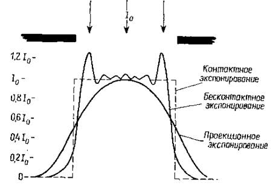 Рисунок 7.7 – Типичная дифракционная картина для разных способов литографии Точная контактная печать часто выполняется в области геометрической тени, которая распространяется на расстояние, меньшее, чем длина волны излучения λ, используемая для экспонирования. Контакт между шаблоном и пластиной редко является достаточным для того, чтобы пластина действительно находилась в этой области. Бесконтактное экспонирование осуществляется в области Френеля, или ближней дифракционной области, которая распространяется на расстояние W2/λ от фотошаблона, где W — характеристическая ширина шаблона. Изменение расстояния между шаблоном и пластиной приводит к значительным изменениям ближней дифракционной картины изображения шаблона. Это в свою очередь вызывает изменения размеров элементов изображения на резисте. Проекционная печать выполняется в области Фраунгофера, или дальней дифракционной области. Распределение интенсивности в дифракционной картине при проекционной печати может быть изменено уже при отклонении фокусного расстояния системы на ±2 мкм. Поскольку кремниевые пластины могут иметь волнистую поверхность с высотой выступов более 6 мкм, большинство фотоштампов проекционных систем обладает автоматическим фокусированием при отображении каждого элемента кристалла. Электронно-лучевая литография. Электронно-лучевая технология, применяемая при создании ИС, обладает рядом преимуществ по сравнению с методом оптической литографии. Эти преимущества состоят в следующем: допускается толщина резиста менее 1 мкм, топология схемы может быть сформирована непосредственно на пластине без применения шаблона, высокая автоматизация технологии создания топологического рисунка. Кроме того, электронный луч имеет большую величину фокусного расстояния по сравнению с фокусным расстоянием оптических литографических систем. Электронный луч может быть использован для обнаружения элементов топологии на кремниевой пластине, что дает возможность - получения очень точного межуровневого совмещения. Недостатком оборудования электронно-лучевой литографии является малая производительность — обеспечивается выход 5 пластина/ч при разрешении 1 мкм. В отношении производительности электронно-лучевое оборудование не может конкурировать с оптическим оборудованием, производительность которого составляет 40 пластина/ч при разрешении 1,5 мкм. Для создания субмикронной топологии на резисте электронный луч должен быть сфокусирован в пятно диаметром 0,01—0,5 мкм. Плотность тока в сфокусированном пятне должна быть высокой для уменьшения времени экспонирования резиста. Большинство термоэлектронных пушек при использовании катодов диаметром 10—100 мкм имеют плотность тока электронного пучка несколько ампер на квадратный сантиметр. Следовательно, для уменьшения диаметра электронного луча в 104 раз необходимо применение электронно-оптических немагнитных линз. Сфокусированный электронный луч должен иметь возможность быть направленным в любую точку сканируемого поля путем управления генератором изображений. Для этого необходимы управляемые ЭВМ системы отклонения и прерывания луча, которые могут действовать на частотах в несколько мегагерц. На рис. 7.8 схематически показана электронно-лучевая литографическая установка. Сканирование луча ограничено абберациями линз обычно до величины <1 см. Пластину, на которой необходимо сформировать топологию, помещают под электронным лучом на столике с интерферометрическим контролем в плоскости XY. Совмещение с топологическим рисунком предыдущего уровня может быть выполнено для каждого элемента кристалла посредством сканирования электронного луча до знаков совмещения, вытравленных в подложке, положение которых определяется путем регистрации сигналов вторичных и обратно рассеянных электронов. Эти сигналы используются для автоматического размещения подложки под электронным лучом. При этом может быть достигнута точность совмещения ±0,2 мкм (3σ).
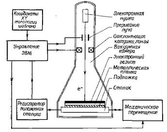 Рисунок 7.8 – Схема электронно-лучевой литографической установки Электронно-лучевые литографические установки обычно используются при проведении исследований и разработок, для производства фотошаблонов и при непосредственном формировании топологического рисунка на поверхности кремниевых пластин. Установки, применяемые с целью проведения научных исследований, должны обеспечивать минимально возможные размеры пятна электронного пучка для получения наивысшего разрешения. При вытравливании линий шириной 1,3 нм в кристаллах NaCl был использован луч диаметром до 0,5 нм. Производительность таких установок не является определяющим фактором. Установки, предназначенные для производства фотошаблонов или окулярных сеток с шагом 2—4 мкм, могут иметь луч относительно большого диаметра (0,25—1 мкм) и среднюю производительность. Удовлетворительной величиной производительности может быть 1 шаблон/ч. Однако установки, конструируемые для изготовления приборов ИС, должны иметь максимальную производительность и, следовательно, луч с наибольшим диаметром, согласующимся с минимальными размерами приборов. Как правило, минимальные размеры элементов приборов примерно в 4 раза больше диаметра луча, а площадь, которая может быть подвергнута воздействию электронного луча без перемещения его в плоскости XY, примерно в 2000 раа больше минимальной площади элемента прибора. Другими словами, чем меньше размеры элементов прибора, тем больше необходимое количество перемещений. А чем больше число перемещений, тем ниже производительность. Таким образом, опять необходимо делать выбор между уменьшением размеров элементов приборов и повышением производительности оборудования обработки пластин. Электронные резисты. Радиационночувствительными резистами называют резисты, в которых химические или физические превращения вызываются ионизирующей радиацией, позволяющей сформировать изображение на резисте. Молекула полимерного электронного резиста состоит из мономерных компонентов, которые должны быть полимеризованы в цепи. Облучение электронами приводит к двум характерным типам взаимодействий: разрыву химических связей и образованию поперечных связей в полимере, стимулированному радиацией. При разрыве химических связей или расщеплении цепочки молекулы полимера его молекулярный вес уменьшается в экспонированной области. В случае достаточного уменьшения молекулярного веса полимера облученный матерал резиста становится растворимым в растворителе, который не действует на высокомолекулярный материал. Полимеры, в которых происходит расщепление цепочек молекул, называют позитивными электронными резистами. Типичные позитивные резисты получают на основе полиметилметакрилата (ПММА) и полибутен-1 сульфона (ПБС). Типичный растворитель состоит из смеси метил изобутилового кетона (МИБК) и изопропилового спирта в соотношении 1:1. Другим превращением, происходящим в полимерных электронных резистах, является стимулированное радиацией образование поперечных связей в молекулах полимера. При образовании поперечных связей происходит соединение соседних цепочек молекул, в результате чего образуется сложная трехмерная структура с большим молекулярным весом, чем молекулярный вес полимера в необлученных участках резиста. Полимеры, в которых преобладает образование поперечных связей, называют негативными электронными резистами. Так же как в случае позитивных электронных резистов, проявление происходит путем растворения низкомолекулярного материала резиста. В качестве негативных электронных резистов обычно используют полиглицидилметакрилаткоэтилакрилат (ПГМАКЭА). Разбухание резиста при проявлении, присущее в большей степени 'негативным электронным резистам, ограничивает разрешающую «способность величиной ~ 1 мкм. Позитивные резисты имеют разрешающую способность менее 0,1 мкм. Предельные возможности и тенденции развития электронно-лучевой литографии. Основным преимуществом литографии с непосредственным формированием топологии электронным лучом являются возможность получения субмикронного разрешения и большая точность межуровневого совмещения по сравнению с основными литографическими методами. Кроме того, электронно-лучевые системы могут быть легко перестроены для выполнения различных литографических операций. Изготавливаемые на заказ СБИС могут быть получены без выполнения первой технологической операции изготовления шаблона, которая приводит к погрешностям и дефектам формирования топологического рисунка схемы. Задачей, стоящей перед электронно-лучевой литографией, является получение субмикронного разрешения при экономически приемлемой производительности. Действие эффектов близости может быть скорректировано, но часто за счет снижения производительности выхода изделий вследствие увеличения машинного времени. Высокого разрешения можно достичь ценой снижения чувствительности резиста и уменьшения производительности. Для получение высокой производительности электронно-лучевого литографического оборудования в сочетании с высоким разрешением необходима разработка источников, обладающих большей яркостью и большей величиной тока электронного луча. Рентгеновская литография. Основные принципы. Рентгеновская литография является разновидностью оптической бесконтактной печати, в которой длина волны экспонирующего облучения лежит в диапазоне 0,4—5 нм. Несмотря на то что при рентгеновской литографии используется бесконтактная экспонирующая система, проявление дифракционных эффектов уменьшено за счет малой величины длины волны рентгеновского облучения. Так как изготовление рентгеновских оптических элементов связано с определенными трудностями, применение рентгеновской литографии ограничено теневой печатью. Рентгеновская литографическая установка показана на рис. 7.9. 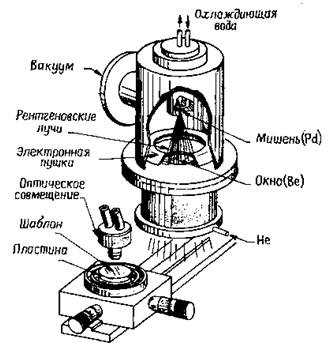 Рисунок 7.9 – Схема рентгеновской литографической установки В этой системе кольцевая электронная пушка, сфокусированная на водоохлаждаемую палладиевую мишень, генерирует электронный пучок напряжением 25 кВ и мощностью 4—6 кВт. В результате этого мишень испускает рентгеновские лучи с длиной волны 0,437 нм, которые проходят через бериллиевое окно в камере экспонирования, заполненной гелием. (Гелий предотвращает поглощение рентгеновских лучей воздухом.) Шаблон с рисунком, поглощающим рентгеновские лучи, и пластина, покрытая чувствительным к рентгеновским лучам резистом, установлены на подвижной платформе, снабженной вакуумным приспособлением для удерживания пластины. Между шаблоном и пластиной существует зазор ~40 мкм. После совмещения шаблона с пластиной платформа передвигается в положение экспонирования, где рентгеновские лучи отбрасывают тень рисунка шаблона на рентгеновский резист. Вся пластина экспонируется в течение ~1 мин. Основная причина разработки метода рентгеновской литографии заключается в возможности получения высокого разрешения и в то же время высокой производительности оборудования. Кроме того, существуют и другие преимущества этого метода. За счет малой величины энергии мягкого рентгеновского излучения уменьшается проявление эффектов рассеяния в резистах и подложке. Поскольку рентгеновские лучи практически не поглощаются загрязнениями, состоящими из компонентов с малым атомным номером, загрязнения на шаблоне не приводят к дефектам рисунка на резисте. И, кроме того, вследствие низкого поглощения рентгеновского излучения резистом рентгеновский резист большой толщины может быть однородно экспонирован на всю толщину, в результате чего в объеме резиста формируется изображение с вертикальными стенками окон, точно повторяющее рисунок шаблона. Рентгеновские резисты. Рентгеновские лучи с длиной волны в диапазоне 0,1—5 нм (энергия фотонов в диапазоне 10—0,25 кэВ) испытывают незначительное рассеяние при прохождении через материал резиста. Рентгеновский луч движется по прямой траектории до тех пор, пока не захватится атомом, который испускает при этом фотоэлектрон. Энергия фотоэлектрона равна энергии фотона рентгеновского излучения за вычетом энергии связи в несколько электрон-вольт, необходимой для удаления электрона из электронной оболочки атома. Наиболее вероятным направлением движения электрона является направление, перпендикулярное к направлению движения фотона рентгеновского луча, т. е. в плоскости резиста. Возбужденный атом возвращается в свое основное состояние, испуская флюоресцентное рентгеновское излучение, или оже-электроны. Флюоресцентное рентгеновское излучение поглощается другим атомом, и процесс повторяется. Поскольку все процессы заканчиваются эмиссией электронов, поглощение рентгеновского излучения материалом резиста может быть представлено как испускание потока вторичных электронов. Эти электроны экспонируют резист, разрывая молекулярные цепи полимера или образуя между ними поперечные связи в зависимости От типа резиста. Все электронные резисты являются также и рентгеновскими резистами. Одним из путей повышения чувствительности резиста является увеличение поглощения резистом рентгеновского излучения. Рентгеновские шаблоны. Рентгеновские шаблоны состоят из поглощающих рентгеновское излучение металлических пленок с нанесенным на них рисунком и тонкой мембраны, пропускающей рентгеновские лучи. Толщина поглощающего материала определяется длиной волны рентгеновского излучения, коэффициентом поглощения материала и величиной контраста, необходимой для формирования изображения на резисте. Наиболее широко применяемым в настоящее время поглощающим материалом является золото. Рисунок на шаблоне обычно формируют с использованием электроннолучевой литографии в сочетании с методами сухого травления. Для сохранения высокого разрешения и точного управления размерами элементов рисунок, сформированный в золотой пленке, должен иметь вертикальные стенки окон. Это требование легче всего выполняется при формировании рисунка в тонкой пленке золота, которая используется при большой длине волны экспонирующего облучения. Мембрана, служащая подложкой для шаблона, должна обладать высокой прозрачностью для рентгеновских лучей, чтобы свести время экспонирования к минимуму. Она должна иметь стабильные размеры и достаточную прочность для многократного использования в технологическом процессе и быть прозрачной для видимого света, если применяется методика оптического совмещения. Для изготовления мембран используют такие материалы, как полиимид, Si, SiC, S13N4, А1203 и многослойные структуры Si3N4/Si02/Si3N4. На рис. 7.10 показана структура рентгеновского шаблона, который успешно используют при изготовлении ИС. Он представляет собой многослойную структуру из нитрида бора и полиимида с пленкой золота толщиной 0,6 мкм, поглощающей рентгеновское излучение, в которой сформирован топологический рисунок схемы. Экспонирующим излучением при использовании этого шаблона служит характеристическое излучение Pdia с длиной волны 0,437 нм. Изготовление шаблона начинают осаждением пленки нитрида бора толщиной 6 мкм на кремниевую подложку. После осаждения центрифугированием наносят пленку полиимида толщиной 6 мкм на пленку нитрида бора для дополнительного упрочнения структуры. Затем на мембрану осаждают пленку Та, пленку золота толщиной 0,6 мкм и еще одну тонкую пленку Та. Вся структура покрывается пленкой электронного резиста, в которой методом электронно-лучевой литографии создают топологический рисунок схемы. Изображение, сформированное на резисте, переносят на пленку Та, которая впоследствии действует в качестве маскирующего слоя при травлении золота. После формирования рисунка в слое золота пленки Та удаляют и наносят другое защитное полиимидное покрытие. Пластину с рисунком присоединяют к кольцу из пирекса и с обратной стороны стравливают кремний, что приводит к образованию структуры мембраны, показанной на рис. 7.10.
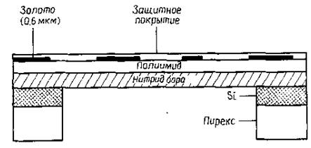 Рисунок 7.10 – Структура рентгеновского шаблона Технология изготовления рентгеновского шаблона разработана не окончательно. Еще предстоит решить ряд проблем: улучшение долгосрочной стабильности рисунка шаблона, исключение нерезкости краев элементов рисунка, ухудшающей разрешающую способность шаблона, и уменьшение плотности дефектов шаблона. От решения этих проблем зависит развитие субмикронной рентгеновской литографии. Источники рентгеновского излучения. Простейшим источником рентгеновского излучения является рентгеновская трубка. В этом устройстве электроны с энергией в килоэлектронвольтовом диапазоне фокусируются на металлической мишени. При этом они возбуждают рентгеновский спектр характеристических линий металла мишени и непрерывный фоновый спектр со значительно меньшей интенсивностью. Эффективность возбуждения рентгеновского излучения (к.п.д.) обычно составляет величину менее 1%. Большая часть энергии электронов рассеивается в виде тепла в мишени. По приведенным выше причинам протяженность источника рентгеновского излучения может привести к значительному размытию изображения. Для уменьшения размытия электронный луч фокусируют в пятно площадью несколько квадратных миллиметров. Даже при принудительном охлаждении мишени максимально допустимая тепловая нагрузка составляет величину порядка 2 кВт/мм2, так что величина потока рентгеновского излучения, падающего на покрытую резистом пластину, должна быть небольшой, обычно не превышающей 0,1 мВт/см2. Имеется другой источник рентгеновского излучения, обеспечивающий создание почти коллимированного пучка (так что геометрические эффекты отсутствуют), широкий диапазон длин волн рентгеновского излучения и плотность потока излучения на поверхности пластины, превышающую 100 мВт/см2. Это излучение, называемое синхротронным излучением, представляет собой электромагнитные волны, испускаемые электронами под действием радиального ускорения, удерживающего их на орбите накопительного кольца синхротрона. В синхротроне пучок электронов непрерывно вводится в накопительное кольцо, где их энергия возрастает, откуда они удаляются обычно с частотой 50—60 Гц. Поток электронов, накопивший в кольце энергию, поддерживается стабильным в течение нескольких часов. Синхротронное излучение характеризуется широким диапазоном длин волн (1—5 нм), которые сильно поглощаются пленкой шаблона со сформированным изображением, и, следовательно, является идеальным источником для получения высокого разрешения рентгеновской литографии. К недостаткам этого источника относится высокая стоимость оборудования. Кроме этих источников существуют источники рентгеновского излучения, основанные на генерации плотной плазмы в небольшом объеме, обеспечивающей выброс интенсивного рентгеновского излучения. Использование этих источников включает применение методов лазерного и плазменного фокусирования и искрового разряда в вакууме. Однако пока рано говорить о практическом применении любого из этих источников в рентгеновской литографии. Рентгеновская литография обеспечивает наилучшие условия для достижения субмикронного разрешения при высокой производительности обработки пластин. При использовании существующих резистов и рентгеновских источников пластины полностью могут быть экспонированы за ~ 1 мин с разрешением <0,5 мкм. В будущем возможно осуществление экспонирования резистов методом мультиплицирования с помощью коллимированного рентгеновского излучения синхротрона. Однако, прежде чем рентгеновская литография найдет широкое промышленное применение, должны быть усовершенствованы методы автоматического совмещения и изготовления рентгеновских шаблонов. Литография в глубокой УФ-области. Стандартная фотолитография обычно проводится в спектральном диапазоне 310—450 нм с фактическим разрешением 1—1,5 мкм. Разрешение может быть повышено путем уменьшения длины волны экспонирующего излучения до опектрального диапазона 200—300 нм, называемого глубокой УФ-областью. Используя обычные оптические литографические установки, модернизированные для работы с более коротковолновым излучением, а также подложки шаблонов, выполненные из кварца вместо стекла, на резисте можно сформировать изображение с размерами элементов порядка 0,5 мкм. Основное преимущество этого метода заключается в применении разработанной электронно-лучевой литографической технологии изготовления шаблонов. Для экспонирования можно использовать промышленные источники УФ-излучения. Ксеноно-ртутная лампа обладает излучением в глубокой УФ-области, но имеет меньшую интенсивность по сравнению со стандартной ртутной лампой. В качестве источника экспонирования также могут использоваться ртутные дуговые лампы с добавкой цинка либо кадмия или дейтериевые лампы. Выбор источника глубокого УФ-излучения на практике зависит от наличия соответствующего фоторезиста. Соответствие между выходным спектром устройства экспонирования и спектром поглощения резиста определяет производительность данного метода литографии. Для предотвращения размытия профиля изображения резиста последний должен поглощать лишь незначительную часть падающего излучения, обычно <20%. Однако слишком малое поглощение значительно увеличивает время экспонирования. Практически любой электронный резист может быть использован в качестве резиста в глубокой УФ-области излучения. На рис. 7.11 показана спектральная характеристика пропускания неэкспонированного и экспонированного с интервалом 2 мин резиста ПММА толщиной 0,8 мкм. В резисте проявляется эффект фотоокрашивания, т. е. с увеличением времени экспонирования поглощение возрастает. Вследствие малой величины поглощения на резисте ПММА формируется неразмытое изображение. Однако, поскольку спектр поглощения резиста ПММА плохо соответствует выходному спектру, например, ксеноно-ртутной лампы, время экспонирования с использованием этого источника велико — порядка 10 мкм
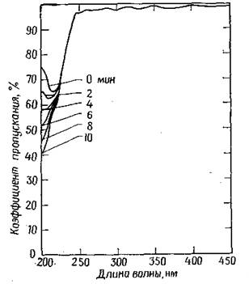 Рисунок 7.11 – Спектр пропускания резиста ПММА толщиной 0,8 мкм в глубокой УФ-области экспонирования При условии разработки устройств экспонирования в. глубокой УФ-области и более чувствительных резистов метод оптической литографии может стать основным методом производства СБИС с разрешением порядка 1 мкм . Многослойные резисты. Чтобы обеспечить неразмытое изображение с высокой степенью разрешения, резист должен получить одинаковую дозу экспонирования по всей глубине пленки. Использование тонких, пленок резиста толщиной <0,3 мкм позволяет намного повысить полезную разрешающую способность устройства экспонирования и значительно улучшить управление воспроизведением размеров элементов топологии. Однако пленка резиста должна быть достаточно толстой для покрытия элементов топологии, сформированной на кремниевой пластине на предыдущих стадиях. Элементы топологии приборов СБИС часто имеют ступеньки окисла или металла высотой ~ 1 мкм. Для покрытия такой ступеньки толщина резиста должна быть не менее 1 мкм. При покрытии такой ступеньки пленка резиста не только обладает большей толщиной, чем это необходимо для получения выского разрешения, но также имеет неоднородную толщину по ступеньке. В связи с тем что использование очень тонких пленок резиста приводит к улучшению разрешения, а согласно технологии ИС, требуется применение толстых пленок, возникает необходимость в разработке систем многослойных резистов.
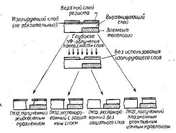 Рисунок 7.12 – Система многослойного резиста Системы многослойных резистов могут быть подразделены на две категории: 1) когда не менее двух слоев используется в качестве резиста и эти слои экспонируются и проявляются, 2) когда только один верхний слой служит резистом, а другие слои удаляют, при этом верхний резист служит шаблоном. В обеих системах нижний слой обычно обладает очень большой толщиной, как правило в 2—4 раза большей, чем максимальная высота ступеньки прибора ИС.
|
| (С) БГУИР |